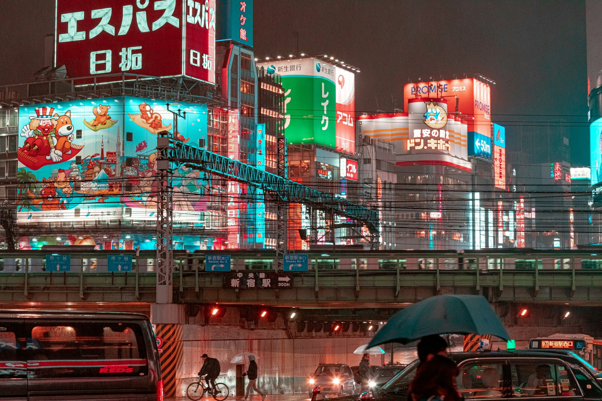
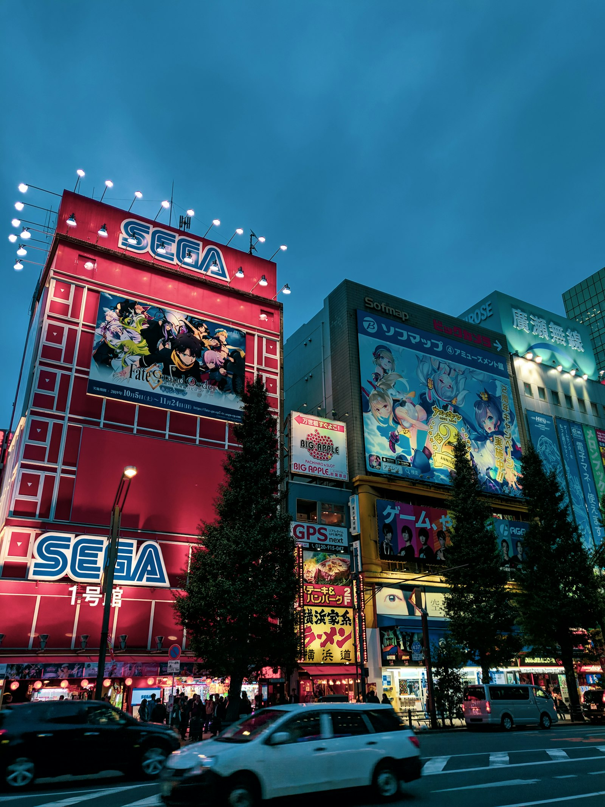

Drawings that hold a heartbeat.
Animation is the only medium that lets a single still drawing breathe. Replace the next paragraphs with your own — the studio you admire, the director you trust, the opening sequence you never skip.
Write about the first show that took you seriously. The one that made you stay up past a school night and pretend, the next morning, you were tired for some other reason.

The series I keep recommending.
Name the show. One sentence on the premise. Two sentences on why it works. End with the exact moment — the cut, the colour, the silence — that made you sit up.
Bonus: list two side characters who deserved more screen time. State your case.

The image I can't shake.
One frame, one feeling. Describe what's in the shot, what just happened, what's about to. Keep it tight — a single paragraph is enough if you choose well.
End with what it taught you about looking at things slowly.